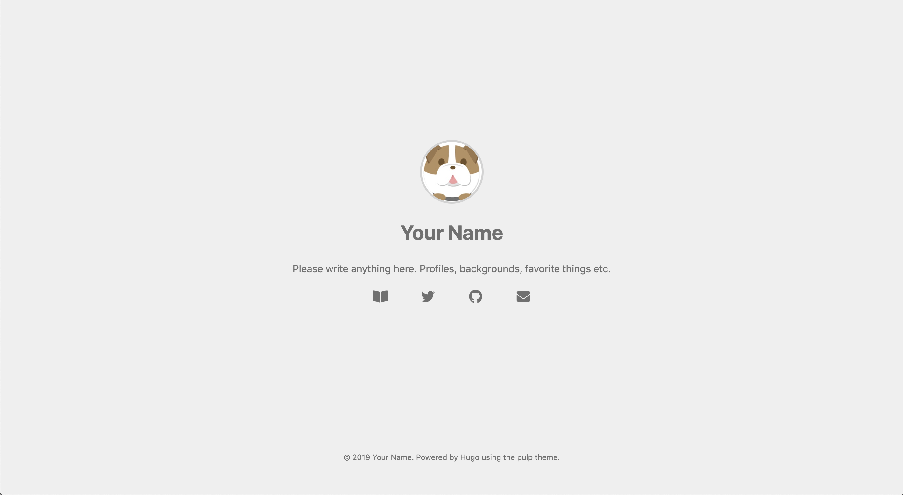

Golang使用hugo搭建你的第一個blog
在我們開始聊Hugo之前，先看看網路上大家都怎麼利用Hugo Show Case
0. Prerequisite
在開始使用hugo之前，必須要先在你的環境中安裝hugo的cli。
如過你是Mac/linux user，恭喜你！你只需要在你的terminal中輸入 （linux user如果無法執行brew command的話，請先安裝Homebrew-on-linux）
brew install hugo
安裝完成後，可以接著輸入
hugo version
如果有成功顯示類似下面的訊息（版本可能會不一樣），那就是安裝已經完成囉。
Hugo Static Site Generator v0.58.3
1. Create first Site
接著輸入下面的command來創建你的第一個blog
hugo new site first-blog
tree first-blog
完成後，你的機器上應該會產生一個first-blog的資料夾，雖然資料夾裡已經透過new site指令幫你創造裡基本的結構，不過我們還需要一些步驟來完成。
2. Apply New Theme
在剛創建完的Hugo Site中預設是沒有任何的theme的，所以你必須去找到一個你想要的theme來套用。 Hugo Themes 近去後應該會看到各式各樣的theme，可以先多瀏覽幾個來看看其他使用者都怎麼利用Hugo。
在這邊我們在這次的教學中選擇的是pulp這個主題 你可以選擇透過網頁下載接著再解壓縮到/first-blog/themes中
或是透過command (環境中必須安裝git cli)
cd /first-blog/themes
git clone https://github.com/koirand/pulp.git
在hugo每個主題中中都會有exampleSite，因此我們先回到原本的first-blog的目錄下 然後將theme中預設的config與範例內容copy到first-blog目錄中
cp themes/pulp/exampleSite/config.toml .
cp -r themes/pulp/exampleSite/* .
接著，在本機端將blog run起來看看
hugo serve --disableFastRender
在執行完這行command後，應該會可以從畫面上看到hugo給你的本地端網址與port EX: localhost:53721，在瀏覽器中打開便可以看到我們剛剛套用的主題與預設內容。

3. Understand Hugo Directory Structure
在我們開始first-blog裡面的內容與config動手腳之前，我們先來了解一下hugo的資料夾組成。
.
├── archetypes
├── config.toml
├── content
├── data
├── layouts
├── static
└── themes
3.1 archetypes
在hugo的command中，有個hugo new的指令可以讓你快速的產生不同的內容，如果你的網站有blog以及其他產品頁面，那可以透過不同的archetypes的template file，再加上hugo new --kind blog blog/first.md, hugo new --kind product product/watch.md等方法，快速的產生預設頁面內容，再稍做修改即可以變成一篇新的post。
3.2 config.toml
Hugo貼心的將整個網站的configuration都集中在config.toml檔中，你可以透過簡單的配置網站的title以及基本網站的資訊，來快速的建立網站。如果有興趣了解可多config的項目，可以參考Configure Hugo，稍後也會介紹其他的配置來讓網站更為完善。
3.3 content
Hugo預設將所有網站的內容都放在content的目錄中，每一個在content目錄下的資料夾目錄都是一個獨立的section，例如我們在first-blog中目前已經有content/blog的目錄，如果你透過Hugo建立的網站是非部落格類型的Site，例如商品展示與介紹的網站，那在content目錄下便有可能會有content/product，content/blog等不同的section，再搭配menu的配置，便可以輕鬆的透過www.example.com/product，www.example.com/blog等方式來存取你的網站頁面。
3.4 data
在這次的first-blog可能不會用到data folder，不過如果你的網站類型是購物網站等類型，那你便可以將商品整理成清單後在儲存在data目錄中，便可以透過data template的方式在你的網站上動態瀏覽不同的商品，而不需要將所有的頁面都產生成頁面。有興趣的話，可以研究一下Data Template。
3.5 layouts
前面有提到Hugo提供archeTypes的方式來讓使用者只需要專注的內容的markdown的撰寫，然後Hugo會自動透過layout中定義的template，來自動幫我們產生整合template與markdown內容的html網頁，以first-blog的例子來看，你可以瀏覽theme/pulp/layout/_default中的檔案，即可以發現部落格中文章清單與單一篇文章的樣式都有各自對應的檔案。
3.6 static
網頁中常用的圖片, CSS, JavaScript檔案的目錄。
4. review hugo config
接著，讓我們來了解在config.toml中的一些配置選項，隨著套用不同的theme預設的config內容應該會有些微的差異，不過基本的配置如網站名稱與owner資訊等項目大部分的theme都已是標配，其他例如google analytics的tracking ID等進階的配置，就是依照使用者需求來決定要不要啟用，如果需要的話，將config item前置的#移除，在數入相對應的config內容便會生效。
baseurl = "https://example.com/" #網站的domain
title = "Site Title" #網站title
# googleAnalytics = "{your tracking code}" ＃GA的Tracking ID
[params]
author = "Your Name"
avatar = "avatar.jpg"
description = """
Please write anything here.
Profiles, backgrounds, favorite things etc.
"""
修改完成後，儲存config.toml，接著我們透過hugo command來看看修改後的成果。
hugo serve
此時，你應該可以透過瀏覽器開啟localhost:1313來看到first-blog的成果。
5. blog is ready to take off
透過前面的幾個步驟，我們已經對於first-blog有了一些簡單的配置來讓blog開始準備上線，而上一步驟中我們使用了hugo serve的指令在本地端觀看執行的成果。不過，Hugo是為了靜態網頁而生，最後，在確認網站都沒有問題後，我們可以透過下面的command將markdown的內容通通轉成靜態的網頁與相關資源。
hugo
嗯ＸＤ，就是只有hugo四個字，接下來可以確認一下first-blog/public中Hugo是不是幫你把目前網站中的內容都產生成靜態的頁面與相關資源，如果沒問題的，就可以將這些靜態檔案透過web serve來讓你的網站上線讓其他人瀏覽。
下一篇，我們再來介紹要怎麼將hugo部署到AWS(Amazon Web Service)。